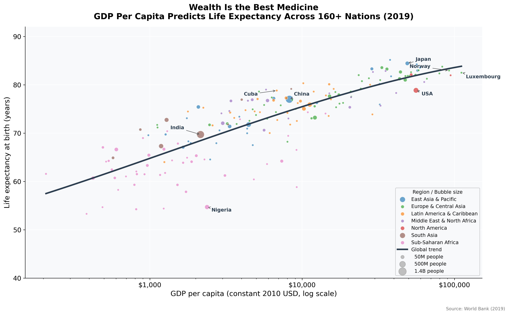
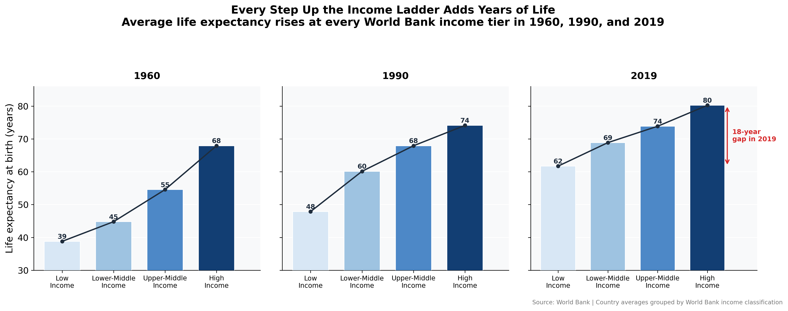
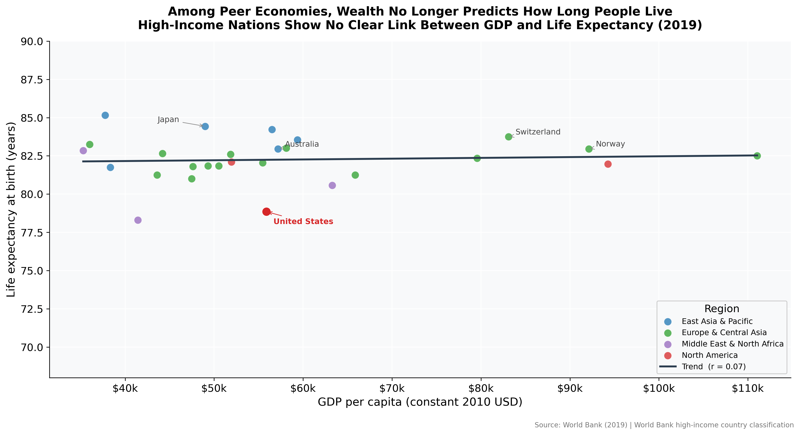
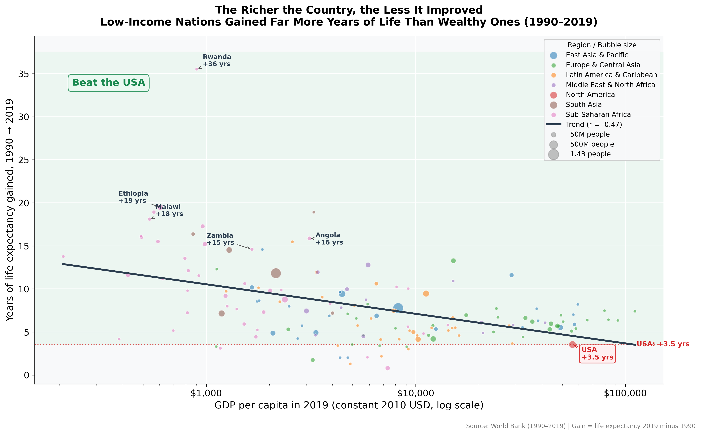

Proposition: Wealthier nations live longer. GDP per capita is the strongest predictor of life expectancy.
FOR the Proposition

Design Decisions and Rationale — Visualization 1 (Preston Curve):
-
1. Log scale on the x-axis (GDP per capita)
Score: 0
A log scale is the standard practice for income data spanning orders of magnitude ($600-$200,000), and it is also used in the original Preston (1975) paper and pretty much all subsequent works related to development economics since. We believe it is genuinely appropriate, but it also compresses the high-income range and makes the correlation appear tighter and more linear than an actual linear scale. We considered using a linear scale, but the log scale helps our persuasion, which makes this choice ambiguous, hence a score of 0.
-
2. Title framing: "Wealth Is the Best
Medicine"
Score: -1
The title implies a causation (wealth improves health) rather than just reporting a correlation. A neutral title would be something like "Higher-GDP Countries Tend to Have Higher Life Expectancy." Instead, our framing uses the authority of medicine to convince the reader that this is a causation. We did consider the factual title but settled on this one as it is much more persuasive.
-
3. Polynomial trend line over all 160+
countries
Score: +1
The trend line is an actual summary of the global average relationship. We did not cherry-pick a weird model and follows the data faithfully (degree-3 polynomial fitted to log-transformed GDP). Including it prevents readers from looking at individual outliers and helps them see the positive pattern.
-
4. Use of 2019 data only (single
cross-section)
Score: -0.5
2019 is the most recent pre-pandemic year with near-complete data, and it also has the strongest correlation, whereas earlier decades has more scatter. Choosing 2019 maximizes the strength of our argument without being obviously wrong, but we also didn't disclose the year selection other than a tiny footnote.
-
5. Bubble size proportional to population
Score: +1
Encoding population in bubble area adds meaningful demographic context and prevents small, micro-states from being over-weighted visually. The largest bubbles like China and India are close to the trend line, improving our claim for the majority of the world's people. This is an genuine design choice that so happens to help our persuasion.

Design Decisions and Rationale — Visualization 2 (Income Ladder):
-
1. Small multiples across three decades (1960,
1990, 2019)
Score: +1
Splitting the chart into three side-by-side panels makes the core claim easy to read: in every decade, life expectancy rises as income group rises. We thought about using one grouped bar chart, but the small-multiple layout makes each year's staircase visible at a glance and strengthens the impression that the pattern spans throughout history, rather than a single-year event.
-
2. Ordered income tiers with a darkening blue color
palette
Score: +0.5
The bars goes from Low to Lower-Middle to Upper-Middle to High income and darken in the same direction, which helps show the "ladder" metaphor visually. We used the official World Bank income groups as they are transparent, reproducible, and widely understood, even though they pool countries with very different internal conditions. The sequential palette is a pretty natural choice, and it helps the viewer interpret the pattern as a clean upward progression.
-
3. Title framing: "Every Step Up the Income Ladder
Adds Years of Life"
Score: -1
The title implies causation: wealth "adds" years of life rather than just correlating with them. A neutral alternative would be something like "Higher-Income Country Groups Have Higher Average Life Expectancy." We chose the causal framing as it is more memorable and turns a descriptive bar chart into a persuasive argument.
-
4. Y-axis truncated at 30 years (not 0)
Score: -1
The axis starts at 30 rather than 0, which amplifies the vertical distance between income groups. If we were to make the axis start from 0, the 2019 gap between Low income and High income would be far less apparent. Starting at 30 makes the staircase effect more prominent, which helps show the apparent size of the income-health association.
-
5. Gap annotation focused on 2019 endpoints
only
Score: -0.5
The red double-headed arrow highlights only the full distance between the poorest and richest groups in 2019, which is the year and comparison most useful to our argument. The number is accurate, but highlighting only the two endpoints weakens the idea that the intermediate groups actually are on a smoother and less dramatic gradient. We think that annotating 1960 (a 29-year gap) instead would have produced a somewhat weaker impression.
AGAINST the Proposition

Design Decisions and Rationale — Visualization 1 (Wealth Plateau):
-
1. Filtering to affluent economies only, framed as
a "peer comparison"
Score: -1.5
Restricting to countries with GDP per capita above ~$35,000 removes pretty much the entire income range where the Preston Curve's slope is steepest, which makes the correlation near 0. The threshold is never mentioned in the title or footnote, and the chart is framed as studying "peer economies" by citing the World Bank's official high-income classification.
-
2. Linear (not log) x-axis
Score: -1
A linear scale stretches the high-GDP end, where Norway, Switzerland, and Luxembourg cluster, and compresses the moderate end, making the trend line look even flatter. Switching from the log scale used in FOR Visualization 1 to linear here is intentional, and using the linear scale to show the high-income seems pretty natural as well, as the range is narrower, so it doesn't come off as too obvious.
-
3. Subtle USA color accent
Score: -0.5
The USA is rendered as a slightly larger red dot with a "United States" label. This draws just enough attention for readers who know the US is both wealthy and not particularly long-lived make the connection themselves. The lack of annotation avoids looking like obvious propaganda while still drawing the reader's attention on the most useful data point.
-
4. Pearson r reported transparently in legend
Score: +1
Including the correlation coefficient in the legend lets more sophisticated readers verify that the linear relationship is negligible (r = 0.07) rather than relying solely on the visual. This is a genuine choice that also helps our argument. We considered omitting it to keep the chart cleaner, but the transparent statistic helps our credibility.

Design Decisions and Rationale — Visualization 2 (Great Health Convergence):
-
1. Reframing the metric: life expectancy gain
rather than absolute level
Score: -1.5
Measuring improvement (1990-2019) instead of current level is very deceptive. Countries starting from very low baselines had a lot more room to improve. So the negative correlation between GDP and gain is thus just the regression to the mean, not evidence that wealth is irrelevant. Nothing in this visualization discloses this confound.
-
2. Title: "The Richer the Country, the Less It
Improved"
Score: -1.5
The title implies that wealth actively slows health progress, which the data does not support. A more accurate title would be: "Countries Starting From Lower Life Expectancies Had More Room to Improve." Our phrasing inverts the causal story, as it is low starting values, not low GDP, that predicts large gains.
-
3. Log scale on x-axis and labelled outlier
annotations
Score: -0.5
The log scale compresses the high-income range, which makes the downward slope appear steep and consistent across the entire distribution. Labelling individual outlier countries like Rwanda (+36 yrs), Ethiopia (+19 yrs), Malawi (+18 yrs) with their large gain figures further dramatizes the downward story.
-
4. USA reference line as comparison anchor
Score: 0
Drawing the USA's gain (+3.5 years) as a horizontal dotted reference line allows for comparison, and most poor countries beat this benchmark. The USA benchmark is true and retrieved exactly from the data. The deception here is that we chose a single well-known outlier as the reference rather than the global average gain (~7.5 years), which would produce a less dramatic contrast. We think this is neutral as the number is accurate and the line is clearly labelled, even if the framing is strategic.
Final Reflection
We believe the most straightforward part of this project was making the FOR visualizations. Since the Preston Curve is one of the most studied areas in development economics, compelling data was really easy to find and frame. However, the harder challenge was designing the AGAINST visualizations to be subtly deceptive without being too obvious. AGAINST visualization 2 was probably the hardest as we had to reframe the metric entirely (gains instead of levels) and made sure that the downward correlation was visually obvious to feel conclusive. AGAINST visualization 1 taught us that the framing of a filter is just as important as the filter itself, since citing an official World Bank country classification is very different from choosing some arbitrary dollar threshold in the title, even when the data is pretty much identical. What surprised us most was discovering how many of our most effective deceptions were technically honest and genuine, such as truncating the y-axis, ordering income groups into a visual ladder, restricting to an official high-income tier, and measuring improvement rather than current level. They all use real data without misreporting any individual number.
We now define ethical visualization as preserving interpretive fidelity, meaning that the conclusion a reader draws is proportional to what the full dataset can reasonably support. Choices like titling a correlation as causation, selecting a subset that inverts a global trend, or truncating a scale to magnify a gap are not individually false, but together they guide readers toward conclusions that would be false to the broader data. By contrast, honest design leads the reader to a conclusion they would still hold after seeing the full methodology and dataset. We think the clearest signal of an ethical violation is when the designer must hide their transformation choices, such as a filter undisclosed in a footnote or a truncated axis left unjustified, since transparency would undermine the argument.
We think that the difference between persuasion and deception is not in any single design choice but in their intent as a whole. A log scale is appropriate for income data, so is filtering a dataset with a stated reason. However, adding on top a selective filter, a scale switch, a causal title, and a prominent outlier annotation creates a visualization that is designed to mislead. We think that the rule should be that a visualization is acceptable if a reader who saw the full methodology would still consider the conclusion reasonable. When the methodology must be hidden to sustain the argument, the line has been crossed. We know that this line can always be drawn cleanly and can be ambiguous in certain scenarios, since every design choice frames the data from some perspective, but intent and transparency together seem like the best criteria available, and the most useful guide for our own future practice.